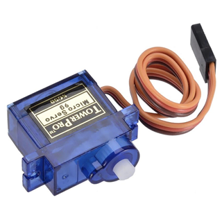

PHYS-S12 Intro to Digital Fabrication
Output Devices
Overview:
My initial thought was to print the MPU 6050 values onto an OLED display, then after further consideration, I realized it would add to my final project if I could control a servo motor with the Roll, Pitch, and Yaw readings from the sensor. As I am in a group with Tiger Strake for my final project, I did some parts of these with him.
Procedure
I hooked the MPU6050 up to the servo motor as shown below.
Once I wired everything up as shown above, I uploaded the code shown below.
#include
#include
#include
Servo sg90;
int servo_pin = 2;
MPU6050 sensor ;
int16_t ax, ay, az ;
int16_t gx, gy, gz ;
void setup ( )
{
sg90.attach ( servo_pin );
Wire.begin ( );
Serial.begin (9600);
Serial.println ( "Initializing the sensor" );
sensor.initialize ( );
Serial.println (sensor.testConnection ( ) ? "Successfully Connected" : "Connection failed");
delay (1000);
Serial.println ( "Taking Values from the sensor" );
delay (1000);
}
void loop ( )
{
sensor.getMotion6 (&ax, &ay, &az, &gx, &gy, &gz);
ax = map (ax, -17000, 17000, 0, 180) ;
Serial.println (ax);
sg90.write (ax);
delay (200);
}
This code uses a MPU6050 sensor and a servo motor . It communicates with the sensor through the Wire library, reads the sensor's acceleration and gyroscope data, and maps the acceleration values to servo positions. The servo motor (SG90) is controlled using the Servo library. The code initializes the sensor, reads its data, maps the acceleration values to servo angles, and moves the servo accordingly. The mapping makes the servo move based on the sensor's data.
I tried to hook up the MPU to an OLED screen as well but it did not work. I am pretty sure this is due to the OLED screen not working. Every code that I tried to push, the OLED screen would not initalize.
Final Output:
In the end I connected the servos to the complient mechanism that we designed and started to control two axes with the servos instead of just one.